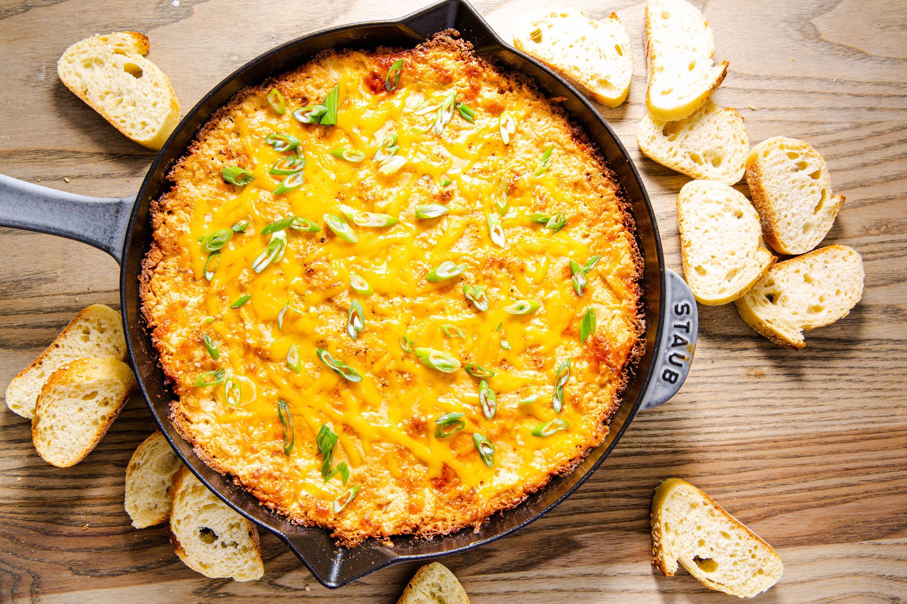

Hot Mudcrab Dip

Let's face it. We've all been chased around by those pesky oversized crabs. Now you can take your revenge on those self-important crustaceans by mixing them into this tasty dip. they bring friends, so why shouldn't you feed them to yours?
Ingredients
- 8 ounces softened cream cheese
- 1/4 cup heavy cream
- splash of white wine vinegar
- 8 ounces crab meat, shredded
- 1 teaspoon Stormcloak Seasoning
- 1/2 cup shredded cheddar cheese
- 2 tablespoons minced chives
- pinch of chili powder
- 3 tablespoons grated Parmesan cheese
- Crackers or baguette slices for serving
Steps
- Preheat the oven to 400F
- Beat together the cream cheese and heavy cream in a medium bowl. Add the remaining ingredients except the Parmesan, stirring until it is evenly blended.
- Transfer the mixture to a medium baking dish and smooth out the top. Sprinkle with the Parmesan cheese and bake for about 20 minutes, or until the dop is hot and the cheese is starting to turn golden brown on top. Serve with crackers or a sliced baguette.